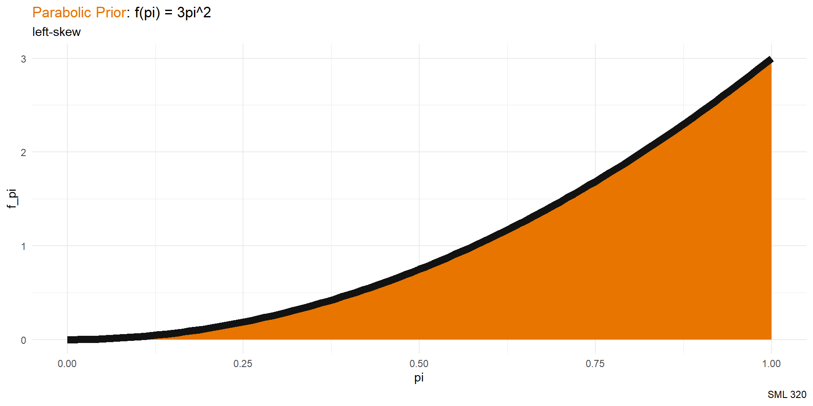
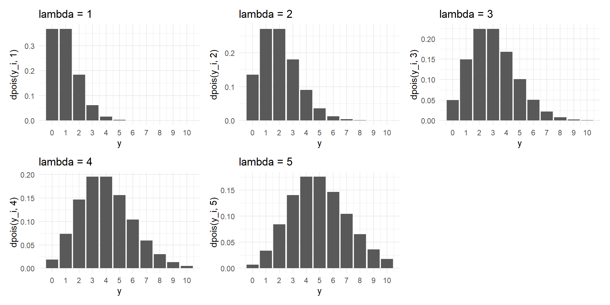
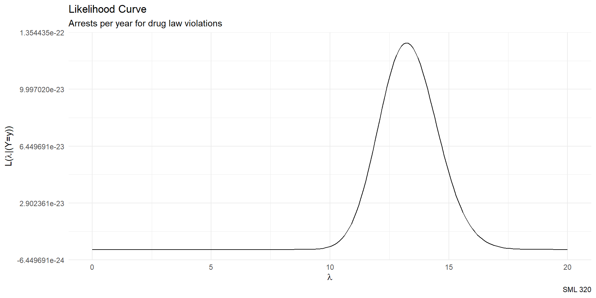
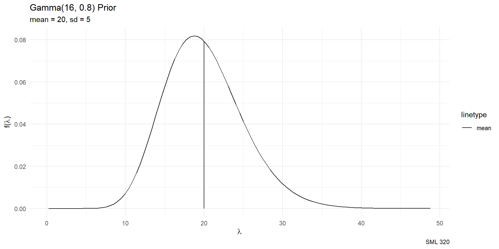
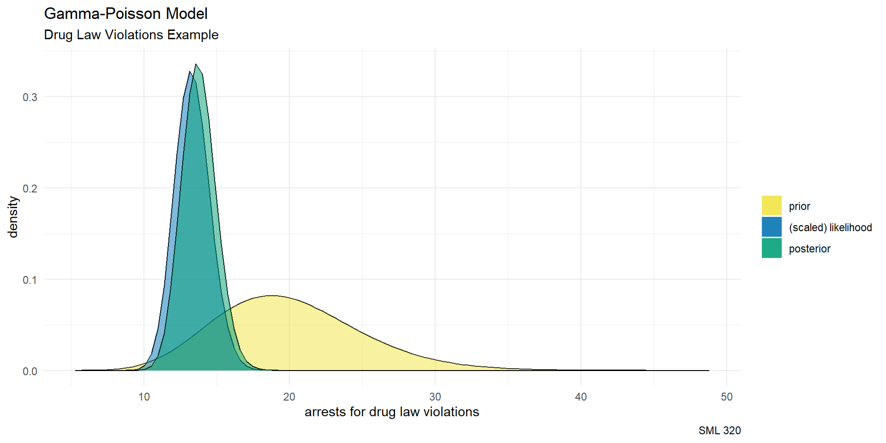
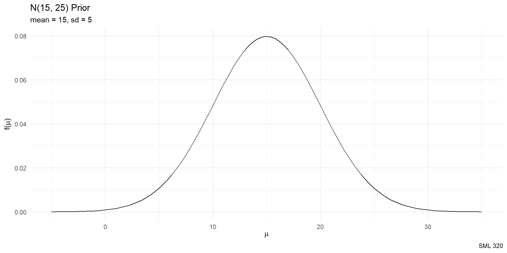
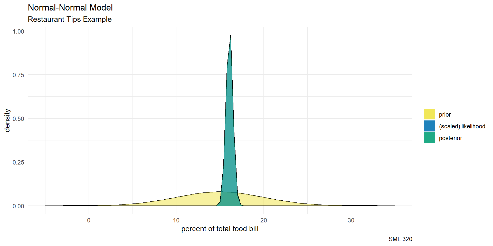

5: Conjugate Families
Derek Sollberger
2024-02-13
Motivations
Simple Prior
Suppose that we wanted to estimate a probability \(\pi \in [0,1]\), but perhaps the beta distribution seems complicated. Instead, we can try an elementary math function like \(f(\pi) = 3\pi^{2}\), where this is a probability density function since
\[\displaystyle\int_{0}^{1} \! 3\pi^{2} \, d\pi = 1 \text{ and } f(\pi) \geq 0 \text{ for } \pi \in [0,1]\]
Interpretability
pi <- seq(0, 1, 0.01)
f_pi <- 3*pi^2
df_for_line <- data.frame(pi, f_pi)
df_for_shade <- df_for_line |>
rbind(c(1,0)) #enforce lower-right corner
df_for_line |>
ggplot(aes(x = pi, y = f_pi)) +
geom_polygon(data = df_for_shade, fill = "#E77500") +
geom_line(color = "#121212", linewidth = 3) +
labs(title = "<span style='color:#E77500'>Parabolic Prior</span>: f(pi) = 3pi^2",
subtitle = "left-skew",
caption = "SML 320") +
theme_minimal() +
theme(plot.title = element_markdown()) #use ggtext packageIf we start with this prior, we are perhaps assuming a situation over \([0,1]\) where we are expecting the event to likely occur:
\[\text{E}(\pi) = \displaystyle\int_{0}^{1} \! \pi \cdot f(\pi) \, d\pi = \displaystyle\frac{3}{4}\]
Likelihood
Suppose that we observe \(Y = 17\) successes in \(n = 32\) independent trials, then modeling the likelihood with a binomial model yields
\[L(\pi|y = 17) = \binom{32}{17}\pi^{17}(1-\pi)^{15} \text{ for } \pi \in [0,1]\]
Posterior Distribution
Recall that the posterior distribution is proportional to the product of the prior distribution and the likelihood
\[\begin{array}{rcl} f(\pi|y=17) & \propto & f(\pi) \cdot L(\pi|y=17) \\ ~ & \propto & \pi^{2} \cdot \pi^{17}(1-\pi)^{15} \\ \end{array}\]
does not have the same form as our prior \(f(\pi) = 3\pi^{2}\)
Normalizing Constant
\[f(\pi|y=17) = \displaystyle\frac{\pi^{19}(1-\pi)^{15}}{ \int_{0}^{1} \! \pi^{19}(1-\pi)^{15} \, d\pi } \text{ for } \pi \in [0,1]\]
- integrals can be tough to compute, even with numerical methods
- very low interpretability
- difficult to compute sample statistics for the posterior distribution (such as mean and variance)
Conjugate Priors
Conjugate families have both computational ease and interpretable posterior distributions.
Conjugate Priors
Let the prior model for parameter \(\theta\) have pdf \(f(\theta)\) and the model of data Y conditioned on \(\theta\) have likelihood function \(L(\theta|y)\). If the resulting posterior model with pdf \(f(\theta|y) \propto f(\theta)L(\theta|y)\) is of the same model family as the prior, then we say this is a conjugate prior.
Poisson Model
Poisson Process
- Assume a constant \(\lambda\) of arrivals
- Let \(N_{t}\) be the number of arrivals in time interval \([0,t]\)
- Homogeneity: \(\text{E}[N_{t}] = \lambda t\) (``rate times time’’)
- Independence: numbers of arrivals in disjoint time intervals are independent random variables
erive distribution of number of arrivals
- We expect \(\text{E}[N_{t}] = \lambda t\) (``rate times time’’)
- Partition time interval \([0,t]\) into \(n\) subintervals
- Assuming \(n\) is large enough so that each subinterval has zero or one arrival (i.e. Bernoulli trial)
- Probability of arrival in a random subinterval: \(p = \displaystyle\frac{\lambda t}{n}\)
So far, we are assuming \(N_{t} \sim \text{Bin}(n,p)\)
\[P(N_{t} = k) = \binom{n}{k} \left(\displaystyle\frac{\lambda t}{n}\right)^{k} \left(1 - \displaystyle\frac{\lambda t}{n}\right)^{n-k}\]
However,
- \(n\) was arbitrary
- time is a continuous variable
So let’s take the limit as \(n\) goes to infinity.
\[\displaystyle\lim_{n \to \infty} P(N_{t} = k) = \displaystyle\lim_{n \to \infty} {\color{purple}\binom{n}{k} \left(\displaystyle\frac{\lambda t}{n}\right)^{k}} {\color{blue}\left(1 - \displaystyle\frac{\lambda t}{n}\right)^{n}} {\color{red}\left(1 - \displaystyle\frac{\lambda t}{n}\right)^{-k}}\]
Handling the limit by its factors: \[\displaystyle\lim_{n \to \infty} {\color{red}\left(1 - \displaystyle\frac{\lambda t}{n}\right)^{-k}} = 1, \quad \displaystyle\lim_{n \to \infty} {\color{blue}\left(1 - \displaystyle\frac{\lambda t}{n}\right)^{n}} = e^{-\lambda t}\]
\[\begin{array}{rcl} \displaystyle\lim_{n \to \infty} {\color{purple}\binom{n}{k} \left(\displaystyle\frac{\lambda t}{n}\right)^{k}} & = & (\lambda t)^{k} \displaystyle\lim_{n \to \infty} \binom{n}{k} \left(\displaystyle\frac{1}{n}\right)^{k} \\ ~ & = & (\lambda t)^{k} \displaystyle\lim_{n \to \infty} \displaystyle\frac{n!}{k!(n-k)!} \cdot \displaystyle\frac{1}{n^{k}} \\ ~ & = & \displaystyle\frac{(\lambda t)^{k}}{k!} \displaystyle\lim_{n \to \infty} \displaystyle\frac{n!}{(n-k)!} \cdot \displaystyle\frac{1}{n^{k}} \\ ~ & = & \displaystyle\frac{(\lambda t)^{k}}{k!} \displaystyle\lim_{n \to \infty} \displaystyle\prod_{i = 0}^{k-1} \displaystyle\frac{n - i}{n} \\ ~ & = & \displaystyle\frac{(\lambda t)^{k}}{k!} \displaystyle\prod_{i = 0}^{k-1} \displaystyle\lim_{n \to \infty} \displaystyle\frac{n - i}{n} \\ ~ & = & \displaystyle\frac{(\lambda t)^{k}}{k!} \\ \end{array}\]
Poisson Distribution
Let discrete random variable \(Y\) be the number of independent events that occur in a fixed amount of time or space, where \(\lambda>0\) is the rate at which these events occur. Then the dependence of \(Y\) on parameter \(\lambda\) can be modeled by the Poisson.
\[Y|\lambda \sim \text{Pois}(\lambda)\]
with probability mass function
\[f(y|\lambda) = \displaystyle\frac{\lambda^{y}e^{-\lambda}}{y!} \text{ for } y \in \{0, 1, 2, ...\}\]
- \(f(y|\lambda) \geq 0\)
- \(\displaystyle\sum_{y=0}^{\infty} \! f(y|\lambda) = 1\)
Statistics
The Poisson distribution has the curious property where the randomness has equal mean and variance:
\[\text{E}(Y|\lambda) = \text{Var}(Y|\lambda) = \lambda\]
Guidance

y_i <- 0:10
f_y <- dpois(y_i, 1)
df_for_plots <- data.frame(y_i,f_y)
p1 <- df_for_plots |>
ggplot(aes(x = y_i, y = dpois(y_i, 1))) +
geom_col() +
labs(title = "lambda = 1") +
scale_x_continuous(name = "y",
breaks = 0:10,
labels = as.character(0:10)) +
theme_minimal()
p2 <- df_for_plots |>
ggplot(aes(x = y_i, y = dpois(y_i, 2))) +
geom_col() +
labs(title = "lambda = 2") +
scale_x_continuous(name = "y",
breaks = 0:10,
labels = as.character(0:10)) +
theme_minimal()
p3 <- df_for_plots |>
ggplot(aes(x = y_i, y = dpois(y_i, 3))) +
geom_col() +
labs(title = "lambda = 3") +
scale_x_continuous(name = "y",
breaks = 0:10,
labels = as.character(0:10)) +
theme_minimal()
p4 <- df_for_plots |>
ggplot(aes(x = y_i, y = dpois(y_i, 4))) +
geom_col() +
labs(title = "lambda = 4") +
scale_x_continuous(name = "y",
breaks = 0:10,
labels = as.character(0:10)) +
theme_minimal()
p5 <- df_for_plots |>
ggplot(aes(x = y_i, y = dpois(y_i, 5))) +
geom_col() +
labs(title = "lambda = 5") +
scale_x_continuous(name = "y",
breaks = 0:10,
labels = as.character(0:10)) +
theme_minimal()
# patchwork
p1 + p2 + p3 + p4 + p5The Poisson distribution is a discrete distribution that tends to be used to model rare events.
Joint PMF
Let \((Y_1,Y_2,…,Y_n)\) be an independent sample of random variables and \(\vec{y} = (y_1,y_2,…,y_n)\) be the corresponding vector of observed values.
Joint Probability Mass Function
Further, let \(f(y_i|\lambda)\) denote the pmf of an individual observed data point \(Y_i=y_i\). Then by the assumption of independence, the following joint pmf specifies the randomness in and plausibility of the collective sample:
\[f(\vec{y}|\lambda) = \displaystyle\prod_{i=1}^{n} f(y_{i}|\lambda) = f(y_{1}|\lambda) \cdot (y_{2}|\lambda) \cdots f(y_{n}|\lambda)\]
The Poisson probability mass function is then
\[\begin{array}{rcl} f(\vec{y}|\lambda) & = & \displaystyle\prod_{i=1}^{n} f(y_{i}|\lambda) \\ ~ & = & \displaystyle\prod_{i=1}^{n} \displaystyle\frac{\lambda^{y_{i}}e^{\lambda}}{y_{i}!} \\ ~ & = & \displaystyle\frac{\lambda^{y_{1}}e^{\lambda}}{y_{1}!} \cdot \displaystyle\frac{\lambda^{y_{2}}e^{\lambda}}{y_{2}!} \cdots \displaystyle\frac{\lambda^{y_{n}}e^{\lambda}}{y_{n}!} \\ ~ & = & \displaystyle\frac{ [\lambda^{y_{1}}\lambda^{y_{2}}\cdots\lambda^{y_{n}}][e^{-\lambda}e^{-\lambda} \cdots e^{-\lambda}] }{ y_{1}!y_{2}! \cdots y_{n}! } \\ ~ & = & \displaystyle\frac{\lambda^{\sum y_{i}}e^{-n\lambda}}{\prod y_{i}!} \\ \end{array}\]
Poisson Likelihood
The Poisson likelihood function is then
\[L(\lambda|\vec{y}) = \displaystyle\frac{\lambda^{\sum y_{i}}e^{-n\lambda}}{\prod y_{i}!}\]
Parameter Selection
How do we fit a Poisson model with our data? One idea is to seek the maximum likelihood estimate (MLE).
Claim: The MLE for the \(\text{Pois}(\lambda)\) distribution is \[\lambda^{*} = \bar{y} = \displaystyle\frac{\sum y_{i}}{n}\]
Proof
From the Poisson distribution’s PMF \(f(y) = \displaystyle\frac{\lambda^{y}e^{-\lambda}}{y!}\), the likelihood function
\[L(\lambda) = \displaystyle\frac{\lambda^{y_{1}}e^{-\lambda}}{y_{1}!} \cdot \displaystyle\frac{\lambda^{y_{2}}e^{-\lambda}}{y_{2}!} \cdots \displaystyle\frac{\lambda^{y_{n}}e^{-\lambda}}{y_{n}!} \]
Taking the natural logarithm of both sides, we create the log likelihood function \(\ell(\lambda)\)
$$ \[\begin{array}{rcl} \ln L(\lambda) & = & \ln \left(\displaystyle\frac{\lambda^{y_{1}}e^{-\lambda}}{y_{1}!} \cdot \displaystyle\frac{\lambda^{y_{2}}e^{-\lambda}}{y_{2}!} \cdots \displaystyle\frac{\lambda^{y_{n}}e^{-\lambda}}{y_{n}!}\right) \\ \ell(\lambda) & = & \ln \displaystyle\prod_{i=1}^{n} \displaystyle\frac{\lambda^{y_{i}}e^{-\lambda}}{y_{i}!} \\ \ell(\lambda) & = & \displaystyle\sum_{i=1}^{n} \ln \displaystyle\frac{\lambda^{y_{i}}e^{-\lambda}}{y_{i}!} \\ \ell(\lambda) & = & \displaystyle\sum_{i=1}^{n} \left( y_{i}\ln \lambda + \ln e^{-\lambda} - \ln y_{i}! \right) \\ \ell(\lambda) & = & (\ln \lambda)\left(\displaystyle\sum_{i=1}^{n} y_{i}\right) - \displaystyle\sum_{i=1}^{n}\lambda - \displaystyle\sum_{i=1}^{n} \ln y_{i}! \\ \ell(\lambda) & = & (\ln \lambda)\left(\displaystyle\sum_{i=1}^{n} y_{i}\right) - n\lambda - \displaystyle\sum_{i=1}^{n} \ln (y_{i}!) \\ \end{array}\]$$
The motivation for the logarithm usage is to ease the process of taking the derivative. Here, taking the derivative with respect to \(\lambda\),
\[0 = \ell'(\lambda) \quad\Rightarrow\quad 0 = -n + \displaystyle\frac{ \sum_{i=1}^{n} y_{i} }{ \lambda } \quad\Rightarrow\quad \lambda = \displaystyle\frac{ \sum_{i=1}^{n} y_{i} }{ n } = \bar{y}\]
That is, the optimal value for parameter \(\lambda\) is the sample mean \(\bar{y}\).
Example: Campus Safety
The following data on arrests for drug law violations come from the Princeton University Annual Security and Fire Safety Report (in and around the main campus)
| year | 2014 | 2015 | 2016 | 2017 | 2018 | 2019 | 2020 | 2021 | 2022 |
|---|---|---|---|---|---|---|---|---|---|
| arrests | 18 | 14 | 23 | 22 | 12 | 22 | 7 | 0 | 1 |
Our maximum likelihood estimate is
\[\lambda^{*} = \displaystyle\frac{\sum y_{i}}{n} = \displaystyle\frac{119}{9} \approx 13.2222 \text{ arrests per year}\]

Gamma Model
Terminology
Let \(\lambda > 0\) be a continuous random variable. For modeling, we might try a Gamma model \[\lambda \sim \text{Gamma}(s, r)\]
- \(s\): shape parameter
- \(r\): rate parameter
Explore!
Matt Bognar at the University of Iowa created this great webapp to explore the gamma distribution.
Exponential Model
The Gamma model is a generalization of the exponential model. When the shape parameter \(s = 1\), then
\[\lambda \sim \text{Gamma}(1,r) = \text{Exp}(r)\]
where \(r\) is once again the rate parameter.
Probablity Density Function
The Gamma model has a continuous pdf
\[f(\lambda) = \displaystyle\frac{r^{s}}{\Gamma(s)} \lambda^{s-1}e^{-r\lambda} \text{ for } \lambda > 0\]
where the gamma function
- \(\Gamma(z) = \displaystyle\int_{0}^{\infty} \! x^{z-1}e^{-x} \, dx\)
Statistics
Formulas for the Gamma model include
\[\begin{array}{rcl} \text{E}(\lambda) & = & \displaystyle\frac{s}{r} \\ \text{Mode}(\lambda) & = & \displaystyle\frac{s-1}{r} \\ \text{Var}(\lambda) & = & \displaystyle\frac{s}{r^{2}} \\ \end{array}\]
Tuning the Prior
Suppose that a parent of an university applicant feels that the university has arrests for drug law violations with counts between 10 and 30 per year. Matching some statistics formulas
\[[\mu - 2\sigma, \mu + 2\sigma] = [10, 30] \quad\rightarrow\quad \mu = 20, \quad \sigma = 5\]
\[\text{E}(\lambda) = \displaystyle\frac{s}{r} = 20 \text{ and } \text{Var}(\lambda) = \displaystyle\frac{s}{r^{2}} = 5^{2}\]

Gamma-Poisson Conjugate Family
Gamma-Poisson Bayesian Model
Let \(\lambda > 0\) be an unknown rate parameter and let \(\{Y_{1}, Y_{2}, ..., Y_{n}\}\) be an i.i.d. sample from a \(\text{Pois}(\lambda)\) distribution. With a setup of a Gamma prior and Poisson likelihood
\[\begin{array}{rcl} \lambda & \sim & \text{Gamma}(s,r) \\ Y_{i}|\lambda & \sim & \text{Pois}(\lambda) \\ \end{array}\]
and observing data \(\vec{y} = \{y_{1}, y_{2}, ..., y_{n}\}\), the posterior distribution also has a Gamma structure with updated parameters
\[\lambda|\vec{y} \sim \text{Gamma}\left( s + \displaystyle\sum_{i=1}^{n} y_{i}, r + n \right)\]
Proof
\[\begin{array}{rcl} f(\lambda|\vec{y}) & \propto & f(\lambda) \cdot L(\lambda|\vec{y}) \\ ~ & = & \displaystyle\frac{r^{s}}{\Gamma(s)}\lambda^{s-1}e^{-r\lambda} \cdot \displaystyle\frac{\lambda^{\sum y_{i}}e^{-n\lambda}}{\prod y_{i}!} \\ ~ & \propto & \lambda^{s-1}e^{-r\lambda} \cdot \lambda^{\sum y_{i}}e^{-n\lambda} \\ ~ & = & \lambda^{s+\sum y_{i} - 1}e^{-(r+n)\lambda} \\ \end{array}\]
Example: Campus Safety
- we tuned a \(\text{Gamma}(16, 0.8)\) prior
- we observed 119 arrests for drug law violations over a \(n = 9\) year time span

Normal-Normal
Terminology
Let \(Y > 0\) be a continuous random variable over all real numbers \(())-\infty, \infty)\). For modeling, we might try a normal distribution \[Y \sim \text{N}(\mu, \sigma^{2})\]
- \(\mu\): mean
- \(\sigma\): standard deviation
Probablity Density Function
The normal distribution has a continuous probability density function
\[f(y) = \displaystyle\frac{1}{\sqrt{2\pi \sigma^{2}}} \text{exp}\left[ -\displaystyle\frac{(y-\mu)^{2}}{2\sigma^{2}}\right] \text{ for } y \in (-\infty, \infty)\]
Statistics
Descriptions of normal distributions are dictated by their statistics
\[\begin{array}{rcl} \text{E}(Y) & = & \mu \\ \text{Mode}(Y) & = & \mu \\ \text{Var}(Y) & = & \sigma^{2} \\ \text{SD}(Y) & = & \sigma \\ \end{array}\]
Tuning the Prior
# A tibble: 6 × 7
total_bill tip sex smoker day time size
<dbl> <dbl> <chr> <chr> <chr> <chr> <dbl>
1 17.0 1.01 Female No Sun Dinner 2
2 10.3 1.66 Male No Sun Dinner 3
3 21.0 3.5 Male No Sun Dinner 3
4 23.7 3.31 Male No Sun Dinner 2
5 24.6 3.61 Female No Sun Dinner 4
6 25.3 4.71 Male No Sun Dinner 4Let us guess that Americans tend to tip between 5 and 25 percent of the total bill.
\[[\mu - 2\sigma, \mu + 2\sigma] = [5, 25] \quad\rightarrow\quad \mu = 15, \quad \sigma = 5\]

Likelihood
In this conjugate prior relationship, the likelihood is also modeled as a normal distribution.
\[L(\mu, \sigma|\vec{y}) \propto \displaystyle\prod_{i=1}^{n} \text{exp}\left[-\displaystyle\frac{(y_{i} - \mu)^{2}}{2\sigma^{2}}\right] = \text{exp}\left[-\displaystyle\frac{\sum_{i=1}^{n} (y_{i}-\mu)^{2}}{2\sigma^{2}}\right]\]
MLEs
The likelihood can also be expressed in terms of the sample mean \(\bar{y}\) and the sample size \(n\)
\[L(\mu, \sigma|\vec{y}) \propto \text{exp}\left[-\displaystyle\frac{ (\bar{y}-\mu)^{2}}{\frac{2\sigma^{2}}{n}}\right]\]
It follows that the maximum likelihood estimates for the parameters are
\[\begin{array}{rcl} \mu^{*} & = & \displaystyle\frac{1}{n}\displaystyle\sum_{i=1}^{n} y_{i} \\ \sigma^{*} & = & \sqrt{\displaystyle\frac{1}{n}\displaystyle\sum_{i=1}^{n} (y_{i} - \mu^{2})^{2}} \\ \end{array}\]
which are the sample mean and from the not-corrected population variance (source).
dplyr
Plot

Code
Normal-Normal Conjugacy
Let \(\mu \in (-\infty, \infty)\) be an unknown mean parameter and let \(\sigma^{2} > 0\) be an unknown variance parameter and let \(\{Y_{1}, Y_{2}, ..., Y_{n}\}\) be an i.i.d. sample from a \(\text{N}(\mu, \sigma^{2})\) distribution. With a setup of a normal prior and normal likelihood
\[\begin{array}{rcl} \mu,\sigma^{2} & \sim & \text{N}(\theta,\tau^{2}) \\ Y_{i}|\mu, \sigma^{2} & \sim & \text{N}(\mu,\sigma^{2}) \\ \end{array}\]
and observing data \(\vec{y} = \{y_{1}, y_{2}, ..., y_{n}\}\), the posterior distribution also has a normal structure with updated parameters
\[\mu,\sigma^{2}|\vec{y} \sim \text{N}\left( \displaystyle\frac{\sigma^{2}}{n\tau^{2}+\sigma^{2}} \cdot \theta + \displaystyle\frac{n\tau^{2}}{n\tau^{2}+\sigma^{2}} \cdot \bar{y}, \quad \displaystyle\frac{\tau^{2}\sigma^{2}}{n\tau^{2}+\sigma^{2}} \right)\]
- What happens if we have relatively small data sets?
- What happens if we have relatively large data sets?
Example

Model Selection
We looked at 3 conjugate families.
- estimate \(\pi \in [0,1]\)
- pro: good for interpretability
- con: computationally expensive for large \(n\)
- estimate \(\lambda > 0\)
- pro: models rare events and skewed data well
- con: discussion of rates instead of counts
estimate mean \(\mu\) and variance \(\sigma\)
pro: ubiquitous in scientific communities
cons:
- infinite support may lead to suboptimal results in larger networks
- was the data symmetric?
Footnotes
R version 4.3.0 (2023-04-21 ucrt)
Platform: x86_64-w64-mingw32/x64 (64-bit)
Running under: Windows 10 x64 (build 19045)
Matrix products: default
locale:
[1] LC_COLLATE=English_United States.utf8
[2] LC_CTYPE=English_United States.utf8
[3] LC_MONETARY=English_United States.utf8
[4] LC_NUMERIC=C
[5] LC_TIME=English_United States.utf8
time zone: America/New_York
tzcode source: internal
attached base packages:
[1] stats graphics grDevices utils datasets methods base
other attached packages:
[1] lubridate_1.9.2 forcats_1.0.0 stringr_1.5.0 dplyr_1.1.3
[5] purrr_1.0.2 readr_2.1.4 tidyr_1.3.0 tibble_3.2.1
[9] ggplot2_3.4.3 tidyverse_2.0.0 patchwork_1.1.2 gt_0.9.0
[13] ggtext_0.1.2 bayesrules_0.0.2
loaded via a namespace (and not attached):
[1] gridExtra_2.3 inline_0.3.19 rlang_1.1.1
[4] magrittr_2.0.3 snakecase_0.11.0 matrixStats_1.0.0
[7] e1071_1.7-13 compiler_4.3.0 loo_2.6.0
[10] callr_3.7.3 vctrs_0.6.3 reshape2_1.4.4
[13] pkgconfig_2.0.3 crayon_1.5.2 fastmap_1.1.1
[16] ellipsis_0.3.2 labeling_0.4.3 utf8_1.2.3
[19] threejs_0.3.3 promises_1.2.1 rmarkdown_2.24
[22] tzdb_0.4.0 markdown_1.8 ps_1.7.5
[25] nloptr_2.0.3 bit_4.0.5 xfun_0.40
[28] jsonlite_1.8.7 later_1.3.1 parallel_4.3.0
[31] prettyunits_1.1.1 R6_2.5.1 dygraphs_1.1.1.6
[34] stringi_1.7.12 StanHeaders_2.32.5 boot_1.3-28.1
[37] Rcpp_1.0.11 rstan_2.32.5 knitr_1.43
[40] zoo_1.8-12 base64enc_0.1-3 bayesplot_1.10.0
[43] httpuv_1.6.11 Matrix_1.5-4 splines_4.3.0
[46] igraph_1.4.3 timechange_0.2.0 tidyselect_1.2.0
[49] rstudioapi_0.15.0 yaml_2.3.7 codetools_0.2-19
[52] miniUI_0.1.1.1 curl_5.0.2 processx_3.8.1
[55] pkgbuild_1.4.0 lattice_0.21-8 plyr_1.8.8
[58] withr_2.5.2 shiny_1.7.5 groupdata2_2.0.2
[61] evaluate_0.21 survival_3.5-5 proxy_0.4-27
[64] RcppParallel_5.1.7 xml2_1.3.5 xts_0.13.1
[67] pillar_1.9.0 DT_0.28 stats4_4.3.0
[70] shinyjs_2.1.0 generics_0.1.3 vroom_1.6.3
[73] hms_1.1.3 commonmark_1.9.0 rstantools_2.3.1
[76] munsell_0.5.0 scales_1.2.1 minqa_1.2.5
[79] gtools_3.9.4 xtable_1.8-4 class_7.3-21
[82] glue_1.6.2 janitor_2.2.0 tools_4.3.0
[85] shinystan_2.6.0 lme4_1.1-33 colourpicker_1.2.0
[88] grid_4.3.0 QuickJSR_1.1.3 crosstalk_1.2.0
[91] colorspace_2.1-0 nlme_3.1-162 cli_3.6.1
[94] fansi_1.0.4 V8_4.3.0 gtable_0.3.4
[97] digest_0.6.33 farver_2.1.1 htmlwidgets_1.6.2
[100] htmltools_0.5.6 lifecycle_1.0.4 mime_0.12
[103] rstanarm_2.21.4 bit64_4.0.5 gridtext_0.1.5
[106] shinythemes_1.2.0 MASS_7.3-58.4